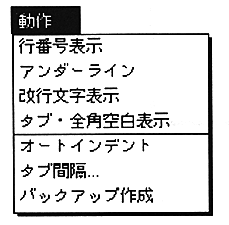
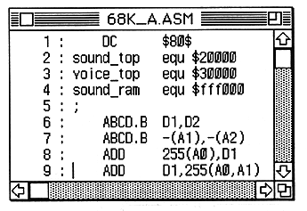

Return to previous page ｜ Return to menu ｜ Go to next page
-
Operation menu
- The “Action” menu has seven commands for defining the operating environment of the active text window. These function independently for each window, and a check mark is displayed on the selected function so that it can be seen at a glance.

-
Display line number
- Displays the line number at the beginning of each line of text.

-
Underline
- Displays an underline at the cursor line.
Return to previous page ｜ Return to menu ｜ Go to next page